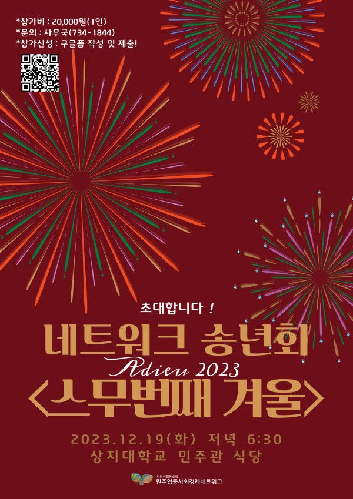

2023 네트워크 송년회 [스무번째 겨울] 안내
12월 19일(화) 저녁 6:30, 상지대학교 민주관에서 네트워크 송년회를 개최합니다.
6월에 네트워크 20주년 행사를 했죠. 올해 송년회 키워드는 [스무번째 겨울] 입니다.
네트워크가 맞이하는 20번째 겨울을 조합원 단체 여러분과 함께하고 싶습니다.
조합원 단체도, 네트워크와 원주시사회적경제지원센터에도 새롭게 바뀐 직원들이 많은데요.
오셔서 서로 인사도 하고 한해의 마무리 겸 즐거운 시간 보내시면 좋겠습니다.
송년회 참가 신청은 구글폼으로 받고 있습니다.
링크를 통해 사전 신청해주세요! ► https://forms.gle/hmB9NWhDwd2jEBFg9